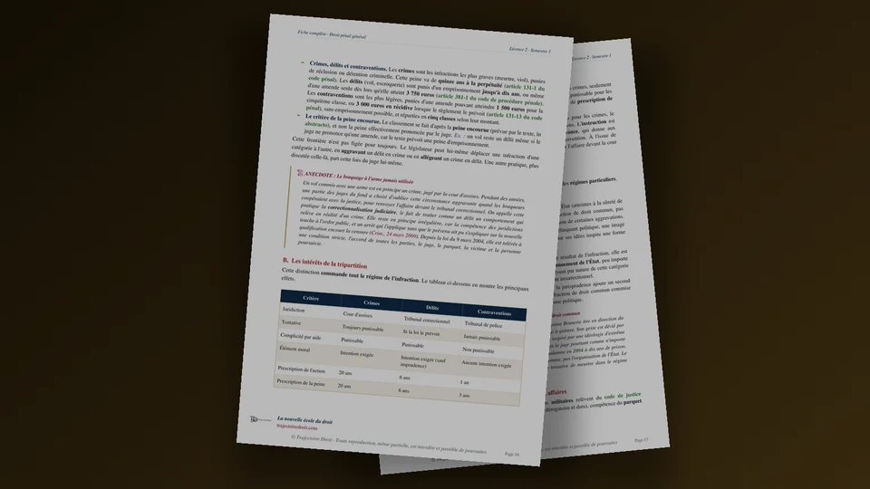

Sujets de droit pénal L2 avec un cas pratique corrigé sur le trouble mental
Ces douze sujets de droit pénal L2 vont des causes d’irresponsabilité à la peine, en passant par la complicité et la faute non intentionnelle. Un cas corrigé montre comment répondre quand deux personnes frappent chacune quelqu’un après avoir bu ou fumé. Tu y vois laquelle peut encore invoquer, depuis la loi du 24 janvier 2022, l’abolition de son discernement (la disparition complète de sa capacité à comprendre ses actes et à les contrôler).

Droit pénal L2, semestre 1
La fiche du cours et le recueil de cas pratiques corrigés
La fiche complète de 109 pages explique les éléments d’une infraction et la tentative. Elle montre ensuite qui en répond pénalement, complice compris, et dans quels cas la loi écarte cette responsabilité. Le recueil de 144 pages, vendu séparément, corrige dix cas pratiques en entier, puis trois sujets types de partiel qui mélangent plusieurs thèmes.
- Dix cas et trois sujets types de partiel dans le recueil pour refaire les exercices avant de lire leurs corrigés
- Un accès immédiat au PDF choisi après le paiement
Si tu hésites entre les deux PDF, prends la fiche pour revoir le cours et le recueil pour t’entraîner à rédiger. La page du droit pénal L2 présente tous les supports du cours, et le catalogue des fiches complètes liste la fiche à l’unité.
Douze sujets pour préparer ton partiel de droit pénal L2
Sous le titre de chaque sujet, la mention en petits caractères indique d’où vient l’exercice. Les situations sont reformulées à partir du document d’origine. Pour les sujets 4, 5 et 6, le lien de la ligne ouvre le texte de l’arrêt sur Légifrance.
Chaque ligne donne le travail demandé, puis ce qu’il faut vérifier dans ta copie. Choisis la ligne qui correspond à ton programme et formule la question de droit que la situation pose, car chaque réponse part de cette question. Quand deux personnes participent à la même infraction, il faut examiner d’abord la responsabilité de chacune, puis se demander si l’une est complice de l’autre. Les exercices sur la loi pénale dans le temps et sur la tentative se trouvent dans la page des sujets de droit pénal général L1 et L2.
| Sujet | Travail demandé | Ce qu’il faut vérifier dans ta copie |
|---|---|---|
| Les causes d’irresponsabilité | ||
| 1. La légitime défense, une police privée encadrée ? Sujet de dissertation d’après un intitulé de cours | Discute cette idée en deux parties. Pour chacune, réunis les articles du Code pénal qui la soutiennent, puis un exemple qui montre à partir de quel moment la riposte devient excessive. | L’article 122-5, alinéa 1, protège celui qui répond à une atteinte injustifiée par un acte rendu nécessaire par l’attaque et accompli pendant l’attaque, sauf disproportion avec sa gravité. En outre, l’alinéa 2 concerne la défense d’un bien et exclut l’homicide volontaire. Enfin, l’article 122-6 présume la légitime défense dans deux cas, à savoir pour repousser de nuit l’entrée par effraction, violence ou ruse dans un lieu habité et pour se défendre contre des vols ou des pillages commis avec violence. Cette présomption peut être renversée par la preuve contraire. Il faut expliquer pourquoi elle aide la personne poursuivie. Le guide sur la légitime défense détaille les conditions. |
| 2. Un vol de téléphone, une poussée et une chute dans le fleuve D’après un semi-partiel de droit pénal général L2, sur la minorité et la légitime défense | Une adolescente de 14 ans arrache le téléphone d’un jeune homme et s’enfuit. Dans une autre scène, un homme éméché, un tesson de bouteille à la main, pousse une femme à terre et s’apprête à lui donner un coup de pied. L’amie de la victime attrape la jambe de l’homme, puis le pousse de toutes ses forces, et il tombe dans le fleuve. Étudie la responsabilité de l’adolescente, puis celle de l’amie. | L’adolescente a 14 ans, donc elle fait partie des mineurs d’au moins 13 ans, présumés capables de discernement (article L. 11-1 du code de la justice pénale des mineurs). Elle peut faire l’objet d’une mesure éducative et, si les circonstances et sa personnalité l’exigent, d’une peine (article L. 11-3). Pour l’amie, il faut vérifier que sa riposte a lieu pendant l’agression et que son geste reste nécessaire et proportionné (article 122-5, alinéa 1). |
| 3. Contrainte ou état de nécessité ? Sujet classique | Compare ces deux causes d’irresponsabilité avec un exemple pour chacune. Dans une bousculade, un homme est projeté contre une vitrine qu’il brise. Une automobiliste franchit la ligne continue pour éviter un enfant qui traverse. | L’article 122-7 concerne celui qui accomplit un acte nécessaire à la sauvegarde d’une personne ou d’un bien face à un danger actuel ou imminent, sauf disproportion avec la menace. L’article 122-2 concerne celui qui a agi sous l’empire d’une force ou d’une contrainte à laquelle il n’a pas pu résister. Cherche, dans chaque exemple, si la personne avait encore un choix à faire. |
| 4. L’irresponsabilité après une consommation de cannabis Commentaire d’arrêt d’entraînement | Commente l’arrêt de la chambre criminelle du 14 avril 2021 (pourvoi n° 20-80.135, le recours formé devant la Cour de cassation). Un homme poursuivi pour meurtre a eu une bouffée délirante que les juges attribuent à sa consommation de cannabis, et la chambre de l’instruction, qui contrôle l’instruction, l’a déclaré irresponsable. Explique ensuite ce que la loi du 24 janvier 2022 a changé. | Selon l’article 122-1, alinéa 1, l’abolition du discernement supprime la responsabilité. L’alinéa 2 laisse en revanche punissable la personne dont le discernement était seulement altéré (diminué sans être supprimé), avec une peine de prison réduite du tiers, ou ramenée à trente ans pour une réclusion criminelle à perpétuité. Pour un délit, une décision spécialement motivée permet toutefois d’écarter cette réduction. Indique enfin ce que l’article 122-1-1 écarte dans l’alinéa 1 et ce que l’article 122-1-2 écarte dans l’alinéa 2. |
| Les personnes qui répondent de l’infraction | ||
| 5. Un salarié blessé près d’une pelle mécanique D’après un partiel de TD de droit pénal, commentaire de l’arrêt du 25 mars 2014 | Commente l’arrêt de la chambre criminelle du 25 mars 2014 (pourvoi n° 13-80.376). Un salarié sous contrat de professionnalisation se blesse près d’une pelle mécanique. Le directeur avait confié ses pouvoirs en matière de sécurité au chef de centre. C’est une subdélégation, car le directeur les tenait lui-même d’une délégation. La société est condamnée parce que le chef de centre n’avait pas formé le salarié aux risques de cet engin. | Nul n’est responsable pénalement que de son propre fait (article 121-1). Pour une société, personne morale distincte de ses membres, l’article 121-2 exige donc une infraction commise pour son compte par un organe (comme le dirigeant) ou un représentant. Dans l’arrêt, la Cour juge que le salarié titulaire d’une délégation de pouvoirs en matière d’hygiène et de sécurité, investi de la compétence, de l’autorité et des moyens nécessaires, est un représentant de la société. Elle précise que la société répond d’une atteinte involontaire à la vie ou à l’intégrité physique qui vient d’un manquement aux règles qu’il devait faire respecter en vertu de cette délégation. Relève enfin la faute retenue contre la société et son lien avec le dommage. |
| 6. Une société de construction répond-elle de l’accident d’un ouvrier ? D’après un examen de droit pénal, arrêt du 25 février 2020 | Réponds à cette question à partir de l’arrêt du 25 février 2020 (pourvoi n° 19-81.771). Un coffreur-boiseur (ouvrier qui monte les coffrages) est pris en étau entre une benne à béton et le garde-corps d’une banche (un grand panneau dans lequel on coule le béton). Un autre ouvrier avait donné, ou semblé donner, au grutier (le conducteur de la grue) l’ordre de descendre la benne. | La Cour relève qu’un chef de projet, titulaire d’une délégation de pouvoirs en matière d’hygiène et de sécurité, n’a pas veillé au guidage du grutier. Ce guidage doit se faire sous le contrôle permanent du chef de manœuvre quand le grutier ne voit pas le trajet entier de la charge, ni directement ni par des dispositifs auxiliaires, comme le prescrit l’article R. 4323-41 du Code du travail. Cherche ce que la société aurait dû organiser sur le chantier, puis explique en quoi cette faute engage sa responsabilité pénale selon les articles 121-2, 121-3 et 222-19. À l’inverse, dans un arrêt du 10 mars 2026, la chambre criminelle annule (elle « casse ») une condamnation qui attribuait la faute à « la direction » sans identifier l’organe ou le représentant de la société. Le guide sur la responsabilité pénale des personnes morales rappelle les conditions. |
| 7. Un prêt de voiture avant une « explication musclée » D’après un exercice de TD de droit pénal général sur la complicité | Allan annonce à son ami Bryan qu’il veut une « explication musclée » avec un homme qui lui a pris sa petite amie. Bryan lui prête sa voiture pour aller au rendez-vous, fixé dans un bois. Allan y tue l’homme de dix-sept coups de couteau, au cou et à la poitrine. Il affirme que l’homme l’a frappé le premier et qu’il avait pris le couteau pour se défendre. Quelles qualifications retenir contre Allan et contre Bryan ? | Pour Bryan, l’article 121-7 exige une aide donnée sciemment (en sachant ce qu’il fait), qui facilite la préparation de l’infraction ou son accomplissement (le texte emploie le mot « consommation » pour l’infraction menée à son terme). Cherche ce que Bryan croyait faciliter au moment du prêt, par exemple une simple explication musclée, puis vérifie si l’infraction commise dépasse ce projet. Pour Allan, il faut discuter son intention de tuer d’après le nombre de coups et les endroits touchés, puis sa légitime défense (article 122-5), qui profiterait aussi à Bryan si elle était retenue. |
| 8. L’employée qui promet de se taire D’après le TD 17 de droit pénal général L2, Paris-Est Créteil, 2025-2026 | Une employée de bijouterie apprend que sa collègue va laisser l’alarme éteinte pour qu’un ami de celle-ci vide le coffre. Elle essaie d’abord de l’en dissuader, puis promet de ne rien dire. Le vol a lieu. Peut-on poursuivre l’employée comme complice ? | L’article 121-7 définit le complice, et l’article 121-6 le punit comme l’auteur. Est complice celui qui aide sciemment l’auteur à préparer ou à commettre l’infraction, ou qui la provoque ou donne des instructions pour la commettre. La question est de savoir si une promesse de silence constitue l’un de ces actes. La complicité exige en principe un comportement positif (une action concrète, comme prêter un objet). La complicité par abstention (sans acte positif) reste en revanche une exception. Les juges l’admettent par exemple quand une personne dont la fonction impose de s’opposer à l’infraction promet d’avance de ne pas intervenir, ou quand sa présence encourage l’auteur. |
| La faute non intentionnelle et la peine | ||
| 9. Le décideur qui n’a pas causé directement le dommage Sujet de dissertation classique | Traite ce sujet, « La responsabilité pénale du décideur depuis la loi du 10 juillet 2000 », en opposant la faute exigée de celui qui cause directement le dommage à celle exigée de celui qui l’a seulement favorisé. Le décideur dirige une entreprise ou une administration. | Selon l’article 121-3, alinéa 3, il y a aussi délit, lorsque la loi le prévoit, en cas de faute d’imprudence, de négligence ou de manquement à une obligation de prudence ou de sécurité prévue par la loi ou le règlement, s’il est établi que l’auteur n’a pas accompli les diligences normales (les démarches de prudence que l’on attend de lui) compte tenu de sa fonction, de son pouvoir et des moyens dont il disposait. En revanche, l’alinéa 4 exige une faute plus grave de celui qui a seulement créé ou favorisé la situation dont est né le dommage. Il faut alors une violation manifestement délibérée d’une obligation particulière de prudence ou de sécurité prévue par la loi ou le règlement, ou une faute caractérisée qui exposait autrui à un risque d’une particulière gravité qu’il ne pouvait ignorer. |
| 10. Comment la juridiction fixe-t-elle la peine ? Sujet classique | Réponds en deux temps. Explique d’abord les fonctions que la loi donne à la peine, puis les éléments dont la juridiction tient compte pour choisir la nature de la peine, sa durée ou son montant, et la manière dont elle s’exécute. | L’article 130-1 donne deux fonctions à la peine, à savoir sanctionner l’auteur de l’infraction et favoriser son amendement (l’amélioration de son comportement), son insertion ou sa réinsertion. L’article 132-1 impose d’individualiser toute peine, donc de l’adapter à chaque auteur, selon les circonstances de l’infraction et la personnalité de l’auteur, puis selon sa situation matérielle, familiale et sociale. Il faut enfin distinguer la peine encourue, le maximum fixé par le texte qui punit l’infraction, de la peine prononcée par la juridiction. |
| 11. Une femme éméchée jette une bouteille et pousse une jeune femme D’après la séance 10 de droit pénal général L2, consacrée au droit de la peine | Une femme s’approche d’un groupe d’amis, jette une bouteille d’alcool au sol, puis pousse l’une des jeunes femmes, qui tombe. Les policiers la trouvent éméchée. Elle se comporte de manière étrange. Des tests d’alcool et de cannabis se révèlent positifs, et un expert conclut que son discernement était altéré au moment des faits. Indique la peine qu’elle encourt pour des violences volontaires sans incapacité de travail. | L’article 222-13, 14°, punit ces violences de trois ans d’emprisonnement et de 45 000 euros d’amende quand elles sont commises en état d’ivresse manifeste ou sous l’emprise manifeste de stupéfiants. L’altération du discernement laisse la personne responsable (article 122-1, alinéa 2). Examine ensuite si la réduction d’un tiers s’applique, en lisant l’article 122-1-2, qui concerne l’altération causée par une consommation volontaire. |
| 12. Récidive légale et réitération Sujet classique | Distingue la récidive de la réitération. Explique ce que la récidive change pour la peine encourue, puis ce que devient la peine prononcée en cas de réitération. | La récidive suppose une condamnation définitive, que ni l’appel ni le pourvoi en cassation ne peuvent plus remettre en cause. Selon l’article 132-9, le maximum des peines d’emprisonnement et d’amende encourues est doublé quand une personne déjà condamnée définitivement pour un crime, ou pour un délit puni de dix ans d’emprisonnement, commet un nouveau délit. Ce délit doit être puni de dix ans d’emprisonnement et commis dans les dix ans, ou être puni de plus d’un an et de moins de dix ans d’emprisonnement et commis dans les cinq ans, à compter de l’expiration ou de la prescription de la peine précédente. En outre, l’article 132-10 double ce maximum pour le même délit, ou un délit assimilé, commis dans les cinq ans qui suivent l’expiration ou la prescription de la peine précédente, par une personne déjà condamnée définitivement pour un délit. Selon l’article 132-16-7, il y a réitération quand une personne déjà condamnée définitivement pour un crime ou un délit commet une nouvelle infraction sans remplir les conditions de la récidive légale. Les peines s’ajoutent alors à celles de la condamnation précédente, sans plafond et sans confusion. Le guide sur la récidive détaille les conditions. |
Les articles 122-3 et 122-4 ajoutent deux autres causes d’irresponsabilité. L’article 122-4 vise celui qui accomplit un acte prescrit ou autorisé par un texte, puis celui qui obéit à un ordre de l’autorité légitime, sauf si cet ordre est manifestement illégal. L’article 122-3 vise celui qui justifie avoir cru, par une erreur sur le droit (se tromper sur ce que la loi permet) qu’il ne pouvait pas éviter, pouvoir légitimement agir.
Pour les sujets 4, 5 et 6, lis d’abord le texte de l’arrêt, puis note les faits et la procédure avant de relever la réponse de la Cour. Pour les sujets 7 et 8, la complicité suppose d’abord un fait principal punissable (une infraction que la loi punit même si son auteur échappe à la peine), puis un acte d’aide, de provocation ou d’instructions, et enfin l’intention de participer à cette infraction. En principe, l’aide ou l’assistance ne vise que les crimes et les délits (les infractions les plus graves), alors que la provocation et les instructions visent aussi les contraventions (les infractions les plus légères). Si l’auteur échappe à la peine pour une cause subjective, comme le trouble mental ou la minorité, le fait principal reste punissable et le complice peut répondre de son aide.
Cas pratique corrigé, deux personnes violentes après avoir consommé des substances
L’énoncé
Maxence Jolivet, magasinier à Limoges, supporte mal le bruit de son voisin Mathias Colin. Le 14 février 2026, à 18 h, il écrit à un ami : « Ce soir je vais lui casser la figure, mais je n’oserai jamais à jeun, alors je me prépare. »
Pendant deux heures, il boit une bouteille de whisky et fume plusieurs joints de cannabis. À 20 h 30, il monte chez Mathias et le frappe à coups de poing et de pied. Mathias a deux côtes cassées et reçoit une incapacité totale de travail de quinze jours. Trois experts psychiatres concluent que Maxence a eu une bouffée délirante (un épisode bref pendant lequel la personne perd le contact avec la réalité) pendant les coups, provoquée par ce mélange, et que son discernement était aboli à ce moment. Cette bouffée délirante a disparu le lendemain.
Océane Brunet, vendeuse à Nantes, fume du cannabis depuis plusieurs années. En juin 2025, après avoir fumé, elle a lancé une chaise sur un ami. Son médecin lui a expliqué que le cannabis déclenchait chez elle des accès de violence, et elle lui a répondu qu’elle l’avait compris.
Le 6 mars 2026, avant une soirée avec ses collègues, Océane fume une quantité de cannabis bien supérieure à son habitude. Pendant la soirée, elle frappe sa collègue Léna Prévost à coups de poing au visage. Léna reçoit une incapacité totale de travail de douze jours. Les experts concluent que le cannabis a aboli le discernement d’Océane au moment des coups, et que ce discernement est revenu quelques heures plus tard.
Maxence et Océane sont poursuivis pour violences volontaires ayant entraîné une incapacité totale de travail de plus de huit jours, commises en état d’ivresse manifeste ou sous l’emprise manifeste de stupéfiants (articles 222-11 et 222-12, 14°, du Code pénal). Les poursuites retiennent seulement cette circonstance aggravante, et la qualification est donnée. Chacun invoque l’abolition de son discernement. Peuvent-ils échapper à toute peine ?
Au brouillon, trois repères à marquer sur l’énoncé
Pendant la lecture, tu entoures de crochets chaque passage qui pose une question, et tu écris quelques mots en marge. Tu peux aussi numéroter les crochets. Ainsi, tu sais dans quel ordre traiter les questions et tu retrouves vite, au moment de rédiger chaque réponse, les faits dont tu as besoin.
- [je n’oserai jamais à jeun, alors je me prépare] → Le but de la consommation de Maxence, qui peut changer la réponse sur l’abolition
- [Son médecin lui a expliqué que le cannabis déclenchait chez elle des accès de violence] → Ce qu’Océane savait avant de fumer
- [le cannabis a aboli le discernement d’Océane] → Le premier alinéa de l’article 122-1 et ses exceptions
1. La responsabilité de Maxence pour les violences sur Mathias
Faits utiles. Maxence a annoncé par message qu’il se préparait pour oser frapper son voisin. Il a bu et fumé pendant deux heures, et les experts constatent que son discernement était aboli pendant les coups.
Question de droit. Maxence peut-il invoquer l’abolition de son discernement, alors que ce trouble vient de l’alcool et du cannabis qu’il a consommés avant les coups ?
Rappel du droit applicable. Selon l’article 122-1, alinéa 1, du Code pénal, une personne n’est pas pénalement responsable quand elle était atteinte, au moment des faits, d’un trouble psychique ou neuropsychique (le trouble mental, dans le langage courant). Ce trouble doit avoir aboli son discernement ou le contrôle de ses actes. De plus, la chambre criminelle a précisé, dans un arrêt du 14 avril 2021, que ce texte s’applique même quand le trouble résulte d’une consommation de cannabis. L’article 122-1-1, créé par la loi du 24 janvier 2022, retire pourtant cette protection quand trois conditions sont réunies.
Une abolition temporaire du discernement. Le trouble s’arrête de lui-même quand les effets de la substance se dissipent. L’abolition existe au moment où le crime ou le délit est commis.
Une consommation volontaire de substances psychoactives, dans un temps très voisin de l’action. L’abolition doit résulter de cette consommation. Par exemple, la personne boit de l’alcool ou fume du cannabis dans les moments qui précèdent les faits.
Le but de commettre l’infraction ou de la faciliter. La personne consomme pour commettre l’infraction ou une infraction de même nature, ou pour en faciliter la commission.
Application aux faits.
L’abolition est temporaire. Les experts relient la bouffée délirante au mélange d’alcool et de cannabis, et elle a disparu le lendemain. Les violences poursuivies sont un délit (une infraction punie d’emprisonnement).
La consommation est volontaire et proche des coups. Maxence boit et fume pendant les deux heures qui précèdent les faits, donc dans un temps très voisin de l’action.
Il consomme pour frapper. Son message annonce qu’il se prépare parce qu’il n’oserait pas frapper à jeun. La consommation sert donc à faciliter les violences poursuivies.
Conclusion. L’article 122-1-1 écarte le premier alinéa de l’article 122-1. Maxence reste pénalement responsable des violences sur Mathias, et il encourt cinq ans d’emprisonnement et 75 000 euros d’amende (articles 222-11 et 222-12, 14°).
2. La responsabilité d’Océane pour les violences sur Léna
Faits utiles. Océane a fumé une quantité de cannabis bien supérieure à son habitude, et les experts constatent que le cannabis a aboli son discernement pendant les coups. Elle avait déjà lancé une chaise sur un ami après avoir fumé, et son médecin l’avait avertie des accès de violence que le cannabis déclenchait chez elle.
Question de droit. Océane est-elle pénalement responsable des violences sur Léna, et peut-elle être sanctionnée pour ce qu’elle a fait avant de les commettre ?
Rappel du droit applicable. L’article 122-1-1 s’applique seulement si la consommation poursuivait le but de commettre l’infraction ou une infraction de même nature, ou d’en faciliter la commission. Sans ce but, l’article 122-1-1 ne s’applique donc pas et le premier alinéa de l’article 122-1 continue de protéger la personne. La loi de 2022 a toutefois créé une infraction pour ce cas, à savoir l’article 222-18-4. Il punit la personne qui a consommé volontairement des substances psychoactives, de façon illicite ou manifestement excessive, en sachant que cette consommation pouvait la conduire à mettre délibérément autrui en danger. Quatre conditions se cumulent.
Une consommation volontaire, illicite ou manifestement excessive.
La connaissance du risque. La personne sait que cette consommation peut la conduire à mettre délibérément autrui en danger.
Un trouble psychique ou neuropsychique temporaire causé par cette consommation. La personne commet des violences sous l’effet de ce trouble.
Une déclaration d’irresponsabilité pénale pour ces violences, en application du premier alinéa de l’article 122-1.
Si les violences ont entraîné une incapacité totale de travail de plus de huit jours, l’article 222-18-4, 3°, prévoit deux ans d’emprisonnement et 30 000 euros d’amende.
Application aux faits.
La consommation est volontaire et illicite. Océane a choisi de fumer du cannabis, un produit illicite, et elle en a fumé bien plus que d’habitude.
Océane connaissait le risque. En juin 2025, elle avait lancé une chaise sur un ami après avoir fumé. De plus, son médecin lui avait expliqué que le cannabis déclenchait chez elle des accès de violence, et elle avait répondu qu’elle l’avait compris. Elle a pourtant fumé malgré cet avertissement. Elle connaissait donc le risque de mettre délibérément autrui en danger.
Le trouble est temporaire et il est causé par le cannabis. Les experts constatent que le cannabis a aboli son discernement, qui est revenu quelques heures plus tard.
L’irresponsabilité relève du premier alinéa. Aucun élément ne montre qu’Océane ait fumé pour frapper Léna, donc l’article 122-1-1 ne s’applique pas. Le premier alinéa de l’article 122-1 s’applique, et elle est déclarée irresponsable des violences.
Conclusion. Océane échappe à la peine prévue pour les violences sur Léna, mais elle reste punissable sur le fondement de l’article 222-18-4, 3°, qui prévoit deux ans d’emprisonnement et 30 000 euros d’amende.
Deux variantes du cas d’Océane, une altération ou des experts en désaccord
Reprends maintenant le cas d’Océane en ne changeant qu’un fait à la fois. Quand ton sujet change un seul fait, retrouve l’article dont la condition change.
Les experts concluent à une altération
Si le discernement d’Océane était seulement altéré (diminué sans être supprimé), le second alinéa de l’article 122-1 s’applique. Elle reste punissable des violences, et la juridiction doit tenir compte du trouble pour fixer la peine. Son altération résulte toutefois d’une consommation volontaire et illicite de cannabis, donc l’article 122-1-2 écarte la réduction du tiers. Océane encourt alors cinq ans d’emprisonnement et 75 000 euros d’amende. L’article 222-18-4 ne s’applique plus, puisqu’il suppose une déclaration d’irresponsabilité fondée sur le premier alinéa de l’article 122-1.
Les experts ne s’accordent pas
Deux experts concluent à l’abolition du discernement d’Océane, mais un troisième conclut à une simple altération. À la clôture de l’instruction, le juge d’instruction estime que l’abolition résulte au moins en partie du fait d’Océane. Selon l’article 706-120, alinéa 2, du Code de procédure pénale, il renvoie alors l’affaire devant la juridiction de jugement, qui statue à huis clos, sans public, sur l’application de l’article 122-1. Si Océane n’est pas déclarée irresponsable, son dossier est examiné sur le fond, c’est-à-dire sur sa culpabilité et sa peine, à une audience ultérieure.
Trois erreurs à éviter dans ces sujets
Qualifier de délibérée une faute d’imprudence
Dans le sujet 6, un chef de projet n’a pas veillé au guidage du grutier. Une copie peut écrire qu’il a violé de façon manifestement délibérée une obligation de sécurité, alors que la Cour retient une faute d’imprudence et de négligence. La violation manifestement délibérée suppose un choix conscient d’ignorer une obligation particulière de prudence ou de sécurité prévue par la loi ou le règlement (article 121-3, alinéa 4). Sans ce choix, une faute simple, c’est-à-dire une imprudence ou une négligence ordinaire, suffit quand le comportement a lui-même causé le dommage. Si le lien est indirect, il faut une faute caractérisée. L’article 222-19, alinéa 2, aggrave la peine en cas de violation manifestement délibérée.
Faire punir le complice alors que l’auteur est couvert par la légitime défense
On lit parfois que Bryan reste complice même si la légitime défense d’Allan est retenue. La légitime défense est pourtant un fait justificatif, qui efface l’infraction pour tous les participants. Si ton énoncé te donne un prêt de voiture comme dans le sujet 7, tu cherches d’abord si la légitime défense est retenue, puis ce que Bryan savait du projet d’Allan.
Refuser l’irresponsabilité parce que la personne a fumé
Le premier alinéa de l’article 122-1 s’applique à l’abolition du discernement quelle que soit son origine, comme la chambre criminelle l’a jugé le 14 avril 2021 pour un trouble lié au cannabis. L’article 122-1-1 retire cette protection à la personne qui a consommé pour commettre l’infraction ou une infraction de même nature, ou pour en faciliter la commission. Une copie qui refuse l’irresponsabilité sans examiner ce but perd des points.
Le sujet 1 reprend l’intitulé d’une dissertation trouvée dans les dossiers de cours. Les sujets 3, 4, 9, 10 et 12, le cas corrigé et ses variantes ont été rédigés pour cette page.
Les règles se lisent dans le Code pénal, le Code de procédure pénale, le Code du travail, le code de la justice pénale des mineurs et les décisions citées.

Questions fréquentes sur les sujets de droit pénal L2
Quels sujets de droit pénal préparer en L2 ?
Les exercices de la page suivent les séances de TD de droit pénal L2. Les quatre premiers portent sur les causes d’irresponsabilité, les quatre suivants sur les personnes qui répondent d’une infraction, et les quatre derniers sur la faute non intentionnelle et la peine. Pour la loi pénale dans le temps ou la tentative, la page des sujets de droit pénal général ajoute d’autres exercices.
Une personne qui a bu ou fumé peut-elle invoquer l’abolition de son discernement ?
Oui quand l’abolition est établie, car l’article 122-1, alinéa 1, s’applique à l’abolition du discernement quelle que soit son origine. L’article 122-1-1 retire cette protection à la personne qui a consommé pour commettre l’infraction ou une infraction de même nature, ou pour en faciliter la commission. Sans ce but, l’article 222-18-4 peut sanctionner la consommation qui a conduit à des violences dont la personne est déclarée irresponsable.
Quel PDF choisir pour refaire des cas pratiques de droit pénal L2 ?
Pour refaire des cas pratiques, choisis le recueil, qui contient dix cas pratiques et trois sujets types de partiel, chacun avec son corrigé. La fiche complète sert surtout à revoir les règles et les conditions avant de rédiger. Tu peux lire le chapitre de la fiche, puis traiter l’énoncé du recueil avant de comparer ta réponse à son corrigé.
Le Pack Ultra L2 semestre 1 réunit 33 ressources pour 259 €, dont des supports de droit pénal. Voir les supports inclus →